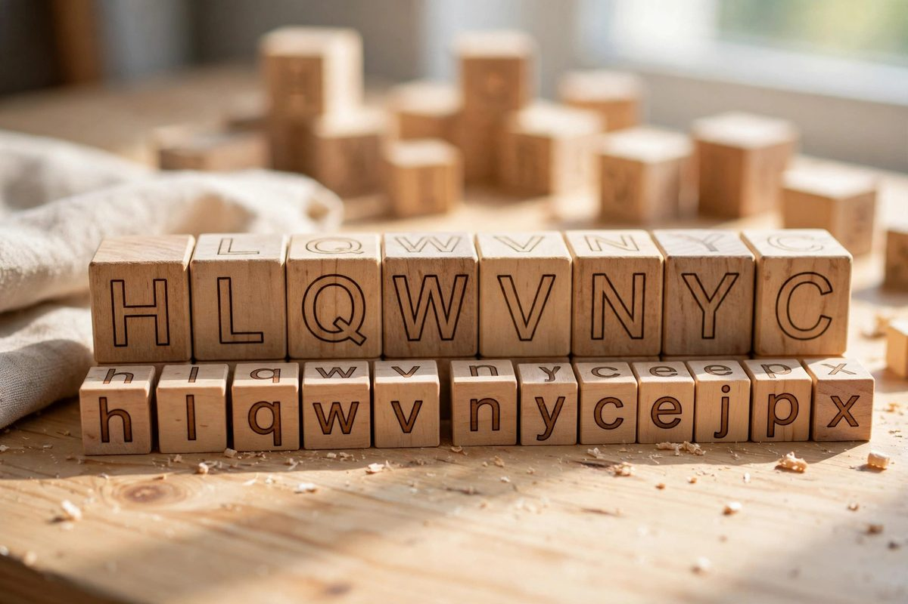

Text Case Converter
Change text case, count words and characters, tidy spacing and reverse text. All tools are free, work in your browser, and send no data anywhere.
How to use this site
Start with the main tool above, then explore the related tools and the twenty guides below. Learn more in these guides: How to Convert Text to Uppercase and Lowercase Title Case Explained: When and How to Use It Sentence Case: Rules and Examples Camel Case vs Snake Case: What Is the Difference How to Convert Text to Snake Case How to Convert Text to Kebab Case. Each guide explains one task in plain language, with a worked example you can check yourself.
For a first try, use the example input already filled in on the tool, press the button, and read the result. Then change one value and try again. That short practice is the fastest way to learn the method.
Tools
Text Case Converter
Convert text to upper, lower, title, sentence, camel, snake or kebab case.
Word & Character Counter
Count words, characters, sentences and reading time.
Remove Extra Spaces
Tidy text by removing extra spaces and blank lines.
Reverse Text
Reverse text character by character or word by word.
Guides
How to Convert Text to Uppercase and Lowercase
Read the full guide with a worked example, common mistakes and answers to frequent questions.
Title Case Explained: When and How to Use It
Read the full guide with a worked example, common mistakes and answers to frequent questions.
Sentence Case: Rules and Examples
Read the full guide with a worked example, common mistakes and answers to frequent questions.
Camel Case vs Snake Case: What Is the Difference
Read the full guide with a worked example, common mistakes and answers to frequent questions.
How to Convert Text to Snake Case
Read the full guide with a worked example, common mistakes and answers to frequent questions.
How to Convert Text to Kebab Case
Read the full guide with a worked example, common mistakes and answers to frequent questions.
How to Count Words and Characters in Text
Read the full guide with a worked example, common mistakes and answers to frequent questions.
How to Remove Extra Spaces From Text
Read the full guide with a worked example, common mistakes and answers to frequent questions.
How to Reverse Text Online
Read the full guide with a worked example, common mistakes and answers to frequent questions.
Text Case Converter: How It Works
Read the full guide with a worked example, common mistakes and answers to frequent questions.
Common Text Formatting Mistakes to Avoid
Read the full guide with a worked example, common mistakes and answers to frequent questions.
Capitalisation Rules for Headings and Titles
Read the full guide with a worked example, common mistakes and answers to frequent questions.
How to Clean Up Pasted Text Before Publishing
Read the full guide with a worked example, common mistakes and answers to frequent questions.
Word Count Explained: Words, Characters and Reading Time
Read the full guide with a worked example, common mistakes and answers to frequent questions.
How to Format Text for Social Media Posts
Read the full guide with a worked example, common mistakes and answers to frequent questions.
How to Format Text for Code and Variable Names
Read the full guide with a worked example, common mistakes and answers to frequent questions.
How to Fix Mixed Case in a Document
Read the full guide with a worked example, common mistakes and answers to frequent questions.

Uppercase vs Lowercase: Which to Use and When
Read the full guide with a worked example, common mistakes and answers to frequent questions.
How to Convert a Whole Paragraph to Title Case
Read the full guide with a worked example, common mistakes and answers to frequent questions.
Text Tools for Writers and Students
Read the full guide with a worked example, common mistakes and answers to frequent questions.
Frequently asked questions
How do I use the main tool on this site?
Open the tool, enter your input in the labelled fields, press the button, and read the result. The worked example on the tool page shows what a correct result looks like.
Is my input sent anywhere?
No. All processing happens in your browser, on your device. No data leaves your device when you use these tools.
Do the tools work on a phone?
Yes. Every page is mobile-first and responsive, with large touch targets and layouts that fit a 360 pixel wide screen without horizontal scrolling.
What if the result looks wrong?
Check the input first, then run the worked example from the matching guide. If the example works, the input is usually the cause.
Are the guides free to read?
Yes. All twenty guides are free, with worked examples, a tip box and answers to frequent questions.
Can I use the result for work or study?
Yes, for everyday use. For important decisions, confirm the result with a second example or an official source.